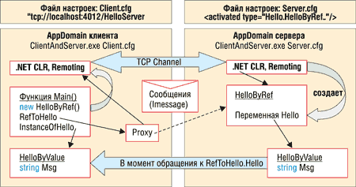

Анатолий Володько,
начальник отдела ядра системы корпорации "Галактика"
anatoly@galaktika.by
В настоящее время большинство прикладных программных продуктов представляет собой замкнутые системы. Это означает, что каждый продукт включает в себя всю необходимую ему функциональность, опираясь на средства, предоставляемые операционной системой. В лучшем случае используются общие библиотеки компонентов и предоставляется некоторый интерфейс (API) или внутренний язык для расширения этой функциональности.
В то же время в умах давно бродит идея о том, что каждая программа должна делать только то, для чего предназначена, а за остальным обращаться к внешнему миру. Достичь этого не удается по многим причинам, но основная - противоречие между необходимостью обеспечить устойчивую работу каждого приложения и требованием эффективного вызова сторонней функциональности. С учетом того, что каждое приложение может развиваться независимо, часто оказывается дешевле реализовать и контролировать некоторую функциональность в урезанном виде самому, чем воспользоваться готовым сторонним решением. Следуя этой тенденции, любое серьезное приложение постепенно превращается в некоего монстра.
Первой попыткой преодолеть эту проблему была Java с ее концепцией "Реализовав один раз - выполнить везде". Но, сказав А, Java не сказала Б, а именно - не предоставила встроенной возможности взаимодействия двух физически разделенных программ. Иными словами, выполнить-то можно, но только если вы согласны собрать все приложение, включая данные, в одном месте. Частичное решение на базе RMI (remote method invocation) не обеспечивало безопасности и устойчивости. Кроме того, меня серьезно смущает требование использовать для всех целей единственный - пусть даже очень хороший - язык программирования.
К этой же проблеме, но с другой стороны, подходят независимые от языка компонентные технологии COM/DCOM и CORBA, которые вводят понятие интерфейса взаимодействия и предоставляют возможность вызывать функциональность удаленно. В чем основные различия этих технологий с точки зрения пользователя и разработчика?
Во-первых, CORBA - платная технология, а COM/DCOM поставляется с Windows.
Во-вторых, реализовать удаленное взаимодействие в COM все же значительно проще, чем в CORBA. Никаких суррогатов на этапе разработки. Метаинформация, необходимая для создания Proxy и Stub во время исполнения, изначально присутствует в компоненте.
В-третьих, CORBA - это только спецификация, реальные же продукты различных производителей могут соответствовать ей в неодинаковой степени, что приводит к различного рода несовместимости, в то время как COM полностью контролируется Microsoft.
Но, с другой стороны, COM/DCOM работает только с Windows и (как платный продукт) с некоторыми UNIX-системами, в то время как CORBA есть почти везде. Кроме того, CORBA предоставляет больше возможностей и с учетом интеграции с Java идеологически превосходит COM. Если же вспомнить про J2EE и оценить перспективы, то становится очевидно, что Microsoft просто необходимо было ответить на вызов, чтобы выиграть битву технологий. Именно она и делает архитектурой .NET.
При сравнении Microsoft .NET с конкурирующими технологиями мне не удалось найти концептуальных преимуществ ни у одной стороны, за исключением некоторых вопросов персистентности объектов в структурированных хранилищах, но при этом .NET - это полностью интегрированная технология, по-прежнему контролируемая единым производителем и поставляемая бесплатно, а в перспективе - вместе с операционной системой.
А главное - разрабатывать распределенные приложения стало не просто, а очень просто. Итак…
"Hello World!" в .NET Remoting
Вначале, хотя это и не имеет отношения к собственно .NET Remoting, необходимо упомянуть, что любой .NET класс и интерфейс можно зарегистрировать в СОМ и использовать в любом приложении, поддерживающем эту спецификацию. И наоборот, из .NET можно создать почти любой зарегистрированный COM-объект и использовать его через COM-интерфейс. Отсюда следует, что все возможности DCOM также доступны, и если изложенное ниже вам все же покажется слишком сложным, то вы всегда сможете организовать удаленное взаимодействие по старинке.
При разработке данного примера я пользовался визуальной средой Visual Studio.NET, но так как это платный продукт, у многих читателей его, по всей видимости, нет. Для того, чтобы наш пример заработал, требуется только наличие установленного Framework SDK .NET и настроенного протокола TCP/IP. Отсюда вытекают и все остальные требования - как аппаратные, так и программные.
Framework SDK .NET можно получить совершенно бесплатно, например, по адресу
http://download.microsoft.com/download/.netframesdk/SDK/1.0/
W98NT42KMeXP/EN-US/setup.exe.
Если компьютер не подключен к Интернету, то для работы с протоколом TCP/IP придется
установить сетевой адаптер или программную заглушку "Microsoft Loopback Adapter"
и настроить TCP/IP.
Начнем с того, что создадим директорию (например, С:\HelloWorld), в которую будем помещать все наши файлы, и разработаем два "прикладных" класса на языке C# (то же самое можно сделать и на Visual Basic.NET).
Первый класс HelloByValue имеет конструктор, в котором запоминает значение строковой переменной Msg, и метод, который выводит на консоль это сообщение. Обратите внимание, что этот класс не имеет предков, т. е. наследуется от Object. Как мы увидим далее, с точки зрения Remoting все классы .NET, не наследуемые прямо или косвенно от класса MarshalByRefObject, рассматриваются как передаваемые по значению (MBV - marshal by value). Для того, чтобы объекты MBV-класса могли передаваться необходимо и достаточно, нужно, чтобы они могли сериализоваться, что достигается указанием атрибута [Serializable] или ручной реализацией интерфейса ISerializable и соответствующего конструктора.
Второй класс HelloByRef наследует классу MarshalByRefObject и также содержит конструктор и метод, который просто перенаправляет метод на объект класса HelloByValue, хранящийся в поле Hello. Наследники MarshalByRefObject передаются по ссылке (MBR - marshal by reference).
Скомпилируем файл Hello.cs с помощью команды:
C:\HelloWorld>csc /target:library Hello.cs.
В результате мы получим файл Hello.dll, который является представлением .NET assembly. Предполагается, что путь на Framework уже настроен, т. е. в переменной окружения Path присутствует строка %SystemRoot%\Microsoft.NET\Framework\v1.0.3705.
Для того, чтобы воспользоваться .NET Remoting, вообще говоря, необходимо иметь два приложения: клиент и сервер. Но мы создадим одно консольное приложение, которое в зависимости от настроек командной строки будет исполнять роль клиента или сервера. Исходный код примера приведен на рис. 1.
| Рис.1. Исходный код примера, файлы Hello.cs и ClientAndServer.cs.
|
На рис. 2 показана структура клиента и сервера в момент взаимодействия. Чтобы понять, как это все работает, скомпилируем файл ClientAndServer.cs с помощью команды:
С:\HelloWorld>csc /target:exe /reference:Hello.dll ClientAndServer.cs
|  |
| Рис. 2. Взаимодействие клиента и сервера.
|
Теперь необходимо создать конфигурационные файлы для клиента и сервера.
Client.cfg:
<configuration>
<system.runtime.remoting>
<application name="Client">
<client url="tcp://localhost:4012/HelloServer">
<activated type="Hello.HelloByRef, Hello"/>
</client>
</application>
</system.runtime.remoting>
</configuration>
Server.cfg:
<configuration>
<system.runtime.remoting>
<application name="HelloServer">
<service>
<activated type="Hello.HelloByRef, Hello"/>
</service>
<channels>
<channel port="4012"
type="System.Runtime.Remoting.Channels.Tcp.TcpChannel,
System.Runtime.Remoting"/>
</channels>
</application>
</system.runtime.remoting>
</configuration>
|
Осталось скопировать в наш каталог файл System.Runtime.Remoting.dll из Framework (у меня этот файл находится в каталоге C:\WINNT\Microsoft.NET\Framework\v1.0.3705). Вообще говоря, вместо этого можно было бы зарегистрировать наше приложение в IIS, но это несколько сложнее и требует другого конфигурационного файла и способа реализации.
Теперь запустим "сервер" в отдельном консольном окне и увидим результат:
С:\HelloWorld>start ClientAndServer.exe Server.cfg Server.cfg: Конфигурирую Remoting... Server.cfg: Получаю объект по ссылке Конструктор HelloByRef Конструктор HelloByValue Server.cfg: Вызов метода через ссылку Перенаправляю... Server.cfg: Hello World! Server.cfg: Получаю объект по значению Server.cfg: Вызов метода у объекта Server.cfg: Hello World! Server.cfg: Press <ENTER> to Exit |
Пока ничего интересного не произошло - все объекты созданы и отработали внутри "сервера", но теперь сервер находится в режиме ожидания запросов клиентов и отслеживает TCP-порт 4012, указанный в Server.cfg*.
*.NET Remoting использует для общения клиента и сервера один сетевой порт, номер которого разработчик может указывать сам. DCOM применяет несколько жестко предопределенных портов. - Прим. ред.
Кроме того, там указано, что клиент может создать на сервере объекты типа HelloByRef из пространства имен (namespace) Hello сборки (assembly) Hello, которая, как мы помним, лежит в файле Hello.dll.
Запустим в другом консольном окне "клиента":
С:\HelloWorld>ClientAndServer.exe Client.cfg
Первые две строки аналогичны:
Client.cfg: Конфигурирую Remoting... Client.cfg: Получаю объект по ссылке
Но теперь конструкторы отрабатывают на сервере! Поэтому строки:
Конструктор HelloByRef Конструктор HelloByValue
мы увидим не в окне клиента, а в окне сервера. Это означает, что оператор new в действительности обратился к серверу, который создал объекты и вернул клиенту удаленную ссылку. Как же клиент смог найти сервер?
В файле Client.cfg мы видим адрес "tcp://localhost:4012/HelloServer", по которому обратился клиент при выполнении операции new HelloByRef(cfg). Как вы уже догадались, все заработает и в том случае, если наш сервер будет запущен где угодно в Интернете (просто нужно указать правильный URL).
Дальше будет еще интереснее. Появление в окне клиента:
Client.cfg: Вызов метода через ссылку
приводит в окне сервера к следующим сообщениям:
Перенаправляю... Client.cfg: Hello World!
Иными словами, методы переменной RefToHello типа HelloByRef отрабатывают на сервере. Но что мы видим дальше? Все остальное уже высвечивается в окне клиента (рис. 3):
Client.cfg: Получаю объект по значению Client.cfg: Вызов метода у объекта Client.cfg: Hello World! Client.cfg: Press <ENTER> to Exit |
| Рис. 3. Работа двух процессов в разных окнах консоли.
|
В момент, когда мы с клиента обратились к полю Hello серверного объекта, в переменную InstanceOfHello вернулась не удаленная ссылка, а локальная копия объекта типа HelloByValue. И теперь метод Welcome(), вызванный у этой копии, отработал уже на клиенте! Обратите внимание - наш конструктор повторно не отрабатывал, точнее, отрабатывал совсем другой конструктор, который сгенерировался автоматически при указании атрибута [Serializable]. Иначе говоря, с точки зрения пользователя объект был создан на сервере, а его метод исполнился на клиенте. Добиться такого поведения в COM без сложных ухищрений невозможно.
Итак, мы смогли, не меняя ни байта кода, изменить логику работу приложения просто за счет подключения соответствующего конфигурационного файла. Впрочем, все то же самое можно было бы сделать программно.
Теперь обратим внимание на один тонкий момент. Файл Hello.dll использовался как на клиенте, так и на сервере. Избежать этого невозможно - как иначе клиент найдет общий язык с сервером?
Но если представить себе, что сервер разрабатывается независимо от клиента, то как добиться соответствия? В нашем примере мы об этом особо не задумывались, но честно признаюсь, что в этом случае для того, чтобы запустить наш пример, нам пришлось бы выполнить еще некоторое количество действий.
В COM проблема решалась за счет того, что взаимодействие шло только через интерфейсы, которые обладают глобально уникальным идентификатором и не могут изменяться после публикации. Этот же подход возможен и в .NET - мы могли бы определить в Hello.dll интерфейсы и поставить с приложением-клиентом этот Assembly, а при доработках на сервере только расширять их набор, не изменяя старых. Но как быть с исполняемым кодом? И что произойдет, если версии Hello.dll на клиенте и сервере различаются?
Здесь и возникает понятие Side-By-Side. Чтобы разобраться с этим, давайте попробуем заглянуть "внутрь".
Краткий курс анатомии Remoting
Запустив любое приложение, вы всегда создаете некоторые границы, в рамках которых оно будет работать. Обычно это границы процесса. Внутри процесса - если отложить вопрос о синхронизации потоков - приложение может напрямую обращаться к любым своим данным и программному коду. Границы процесса надежно защищают приложения друг от друга. Для выхода за эти границы необходимо упаковать все данные вызова в некоторый формат и передать их в другой процесс, где они будут распакованы. Затем на их основе выполняется вызов, результаты которого тем же способом передаются обратно. Этот процесс называется маршаллингом/демаршаллингом. В COM это спрятано глубоко в системных библиотеках, и управлять этим процессом достаточно сложно. Что же мы видим в .NET?
Для определения границ взаимодействия .NET вводит понятие домена приложения - AppDomain. Внутри одного процесса может работать несколько AppDomain. Каждый из них имеет собственные настройки и может независимо подгружать сборки. Причем внутри одного AppDomain может одновременно функционировать несколько версий одних и тех же классов, расположенных в физически разных сборках. Как же во всей этой неразберихе приложению удается работать?
Дело в том, что любой тип в .NET характеризуется не только своим квалифицированным именем, как в Java, но и именем сборки (Assembly Name), включающим ее публичный ключ (Public key). Таким образом, когда вы компилируете свою программу, в манифест вашей сборки (Assembly Manifest) попадает информация обо всех используемых типах, уникально их идентифицируя, а среда исполнения CLR (Common Language Runtime) гарантирует, что ваша программа будет использовать только совместимые версии объектов.
С помощью настроек мы можем управлять способом загрузки типов, например, подменяя их совместимыми и указывая местоположение, в том числе посредством URL, необходимых сборок. CLR на основе этой информации может находить нужные сборки в своем кэше (GAC - global assembly cache) и даже подгружать их из глобальной сети.
В общих чертах именно в этом заключается технология Side-By-Side (из-за ограниченности объема статьи не удастся разобрать ее и остальные вопросы Remoting более подробно). Стоит только подчеркнуть, что для понимания концепций .NET необходимо учитывать целый пласт вопросов безопасности, которая в .NET продумана достаточно глубоко.
Что же еще обеспечивает .NET Remoting? Вот краткий перечень:
- Несколько видов активации объектов: серверные Singleton, Single-Call и клиентская (мы ее использовали в примере).
- Пересылка вместе с объектом всей связанной с ним инфраструктуры, т. е. объектов, на которые имеются ссылки.
- Возможность асинхронной работы - клиент не обязан останавливаться для ожидания ответа сервера, что существенно для медленных каналов.
- Встроенное управление временем жизни (Lifetime service) удаленного объекта, за счет чего разрешаются проблемы освобождения ресурсов при обрыве соединения.
- Поддержка удаленного вызова событий (Events).
- Оптимизация вызовов между доменами приложений, исполняющихся в одном процессе с полным сохранением их независимости, включая возможность остановки (выгрузки из памяти).
- Два стандартных протокола взаимодействия: HTTP/HTTPS и TCP (вспомните о строке System.Runtime.Remoting.Channels.Tcp.TcpChannel в конфигурационном файле).
- Два стандартных формата передачи - XML (SOAP) и двоичный (binary). В примере использовался двоичный. Вы можете произвольно комбинировать протокол взаимодействия с форматом передачи, стандартным или собственным.
- Атрибутно и программно управляемые маршаллинг и сериализация.
- Возможность разрабатывать собственные протоколы и форматы передачи, в том числе специализированные под структуру объектов. Причем все это можно делать в управляемом коде (managed code) на любом языке, поддерживающем .NET, включая Visual Basic.
- Поддержка контекста вызова (call context) и объектов, работающих в некотором контексте, например, транзакции (context bound objects). Сервер в любой момент может получить информацию о клиенте, производящем удаленный вызов. Кроме стандартной идентификации (имя, роль, права доступа и т. д.), клиент может предоставлять серверу в контексте вызова произвольную дополнительную информацию о своем состоянии, например, идентификатор текущей транзакции.
- Языковая интероперабельность, т. е. межязыковые вызовы.
- Интеграция с COM+ (старое название MTS - Microsoft Transaction Server).
- Возможность публиковать или использовать сервисы в любом хосте домена приложения (консоль, Windows Form, Internet Information Services (IIS), ASP.NET Web Service, Windows Service).
- Строгий контроль типов при удаленном взаимодействии.
- Возможность работы по Reflection (можно динамически узнавать о структуре объекта и вызывать его методы, на этапе разработки еще не зная, с каким конкретным типом объекта придется работать при исполнении программы).
- Автоматическая поддержка стандартных интерфейсов COM: IUnknown, IDispatch, IDispatchEx, IErrorInfo, ISupportErrorInfo, IProvideClassInfo, ITypeInfo, IConnectionPoint, IConnectionPointContainer и других.
- Основанное на ролях управление безопасностью доступа на уровне вызовов методов и доступа к полям (Code Access Security).
- Доступ к Web-сервисам по SOAP и их публикация (UDDI, WSDL).
- Поддержка локализации кода и ресурсов.
- Поддержка встроенных устройств (small devices) на платформе Windows CE.
- Наличие Visual Studio.NET - удобного средства разработки и отладки, в том числе в распределенной среде.
Более подробные сведения об этих возможностях вы найдете по адресу http://msdn.microsoft.com или в документации по .NET.
Быстродействие
Написать статью о Remoting и не сказать ни слова о скорости работы было бы некорректно. В целом можно сказать, что скорость вполне сравнима с COM/DCOM. Собственно удаленный вызов занимает порядка одной тысячной секунды для протокола TCP, для HTTP - в несколько раз больше. Дополнительные траты времени зависят от скорости сети и объема данных, пересылаемых при вызове.
В таблице приводятся результаты тестирования различных режимов Remoting на быстродействие в ситуации, близкой к реальной. Понятно, что это ориентировочные цифры, так как практически невозможно зафиксировать все параметры. Тесты проводились на двух компьютерах - клиент и сервер (процессор Pentium III 450 МГц, 256 Мбайт ОЗУ, сеть 100 Мбит/с) c Microsoft SQL Server 2000, установленном на том же компьютере, что и сервер приложений.
Результаты тестирования на быстродействие
| Вид объекта | Канал, формат | Вид активации менеджера | Время создания менеджера объектов, с | Время на 1000 повторений создания БО + 1 вызов функции, с | ||
| 1-й раз | следующие | 1-й раз | следующие | |||
| Marshal By Reference | TCP, Binary | Client | 0,9 | 0,7 | 7 | 7 |
| Singleton | 0,05 | 0,05 | 9 | 8 | ||
| SingleCall | 0,8 | 0,5 | 41 | 26 | ||
| HTTP, SOAP | Client | 4 | 0,9 | 31 | 21 | |
| Singleton | 0,3 | 0,07 | 27 | 22 | ||
| SingleCall | 0,6 | 0,08 | 48 | 48 | ||
| Marshal By Value | TCP, Binary | Client | 0,9 | 0,7 | 9 | 7 |
| Singleton | 0,06 | 0,06 | 8 | 7 | ||
| SingleCall | 0,06 | 0,05 | 14 | 10 | ||
| HTTP, SOAP | Client | 2,6 | 0,9 | 35 | 35 | |
| Singleton | 0,07 | 0,07 | 20 | 18 | ||
| SingleCall | 0,08 | 0,07 | 18 | 17 | ||
Приложение состоит из серверной и клиентской частей. Серверная часть содержит следующие компоненты:
- хост - настраивает параметры активации объектов и коммуникационного канала;
- менеджер объектов - создает соединение с БД, создает (загружает из БД) экземпляры прикладного класса;
- прикладной класс - содержит атрибуты и функции бизнес-логики. Хранит свое состояние в БД.
Клиентская часть удаленно создает менеджер объектов (три вида активации) и запрашивает у него бизнес-объекты**. При тестировании определялось время создания удаленного менеджера объектов (marshal by reference), получение у него 1000 бизнес-объектов, их инициализация и вызов одной функции (marshal by reference и marshal by value). Необходимо учитывать, что в случае marshal-by-value количество удаленных обращений в два раза меньше, так как вызов функции происходит локально, без накладных расходов Remoting, но объем пересылаемых данных при получении удаленного объекта соответственно больше. При увеличении количества обращений к одному и тому же объекту работа с объектами marshal by value становится предпочтительней, при увеличении размера объектов и отказе от контроля объема пересылаемой инфраструктуры - ситуация обратная.
**.NET Remoting включает три варианта активации объектов. Клиентская активация представляет собой аналог доступа к объектам, реализованный в DCOM: клиент создает экземпляр уделенного объекта, который в дальнейшем обслуживает соответствующие ссылки данного клиента. Время жизни объекта определяется клиентом. Другие два режима активации - серверные: Singleton и SingleCall. В обоих случаях реальный объект в серверном процессе создается только при вызове какого-либо метода, время жизни объекта определяется сервером. В режиме Singleton все клиенты используют один экземпляр объекта, который сохраняет состояние между вызовами метода. В отличие от него, SingleCall подразумевает создание сервером нового экземпляра объекта при каждом вызове метода. Такой объект существует только на время вызова клиентского метода. - Прим. ред.
В каждом режиме тест запускался несколько раз. При первом запуске присутствуют дополнительные накладные расходы на раскрутку инфраструктуры Remoting. В таблице указано время для первого запуска и усредненное время для последующих. Разброс данных связан с изменением загрузки сети в процессе проведения тестов и других случайных параметров.
Что же дальше?
Читая эту статью, вы, возможно, решили, что автор - горячий поклонник Microsoft. Вообще говоря, это не совсем так. Попробую пояснить свою позицию на реальном примере.
Как известно, корпорация "Галактика" - разработчик одноименного программного продукта, ERP-системы. В связи с появлением потребности в решениях B2C, B2B, B2E и общим развитием Интернета встал вопрос о выборе основной технологии взаимодействия. Мы начинали с Java + COM, но после появления .NET пришлось снова вернуться к этому вопросу. Проанализировав EJB, J2EE, CORBA, мы обнаружили, что реальной совместимости между производителями, по крайней мере в настоящее время, они не обеспечивают. При этом, естественно, мы вполне понимали, что выбор .NET означает, хотя бы в ближайшей перспективе, отказ от Linux в качестве платформы сервера приложений. Впрочем, это отнюдь не окончательный вывод, так как большинство спецификаций .NET открыты, и поклонники Linux как люди, которым нравится иметь собственноручно скомпилированную операционную систему, вполне способны изменить положение дел.
Мы задали себе следующие вопросы:
1. Что лучше - "завязаться" на единственного производителя одной технологии или на одного из производителей одной из альтернативных технологий?
2. Каков процент наших клиентов, готовых платить за сторонний сервер приложений?
Ответив на эти вопросы, корпорация "Галактика" в настоящее время сделала ставку на .NET***, но вполне возможно, что вы найдете другие вопросы или иначе ответите на эти.
***На сайтах корпорации "Галактика" http://www.galaktika.by и http://www.galaktika.ru вы можете найти исходные тексты приводимых в этой статье программ, аналитические материалы по .NET и информацию о проектах в этой области.
Напоследок я хотел бы привести один из моих любимых афоризмов: "Никто не попадает в ловушку помимо собственного желания". Но ведь, не попав в ловушку, невозможно найти способ из нее выбраться. Невозможно даже понять, в каком направлении идти. Поэтому я предлагаю принимать решения сейчас на основе тех знаний, которые у нас есть сейчас.